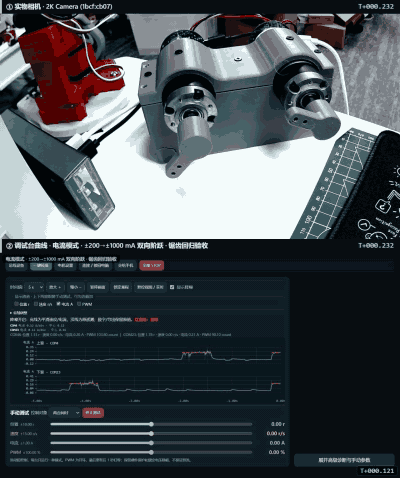
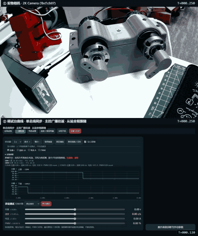
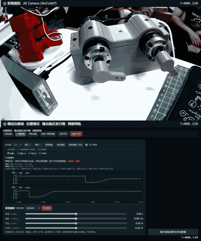
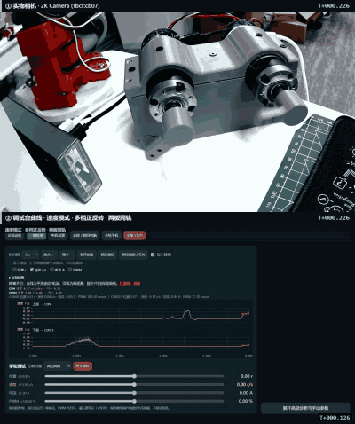
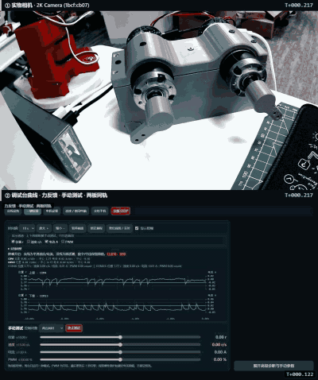
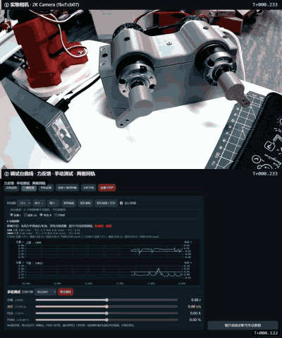
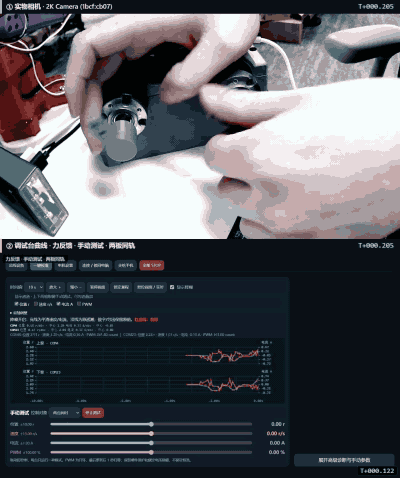

本轮验收范围
- 手动电流模式的锯齿回归，正反双向 —— 该模式已改为不做速度降额，空载轴允许自由飞转， 参考电流应为平顶方波而不带锯齿。本段跑 +1000 mA 到 -1000 mA 的完整环， 并在换向前先把电流收到 0 mA、等轴滑停，以证明反向是正常工况而不是急反接制动。
- 单总线位置同步的从站跟随 —— 两板 UART 直连，主控广播位置指令，从站必须 每一段都跟随，而不是只在第一次跟到位。
- 单板位置模式的到位精度 —— 作为上面两项的基线参照。
- 单板速度模式多档正反转 —— 各档指令与实际轴速的对应。
- 手动力反馈（人工操作） —— 操作者在调试页面上启用双板力反馈 / 电流力反馈旋钮， 用手施加负载感受手感；录制端全程不下发任何运动指令，只做记录。此类片段没有脚本设定值， 判定列只核对"是否真被操作过"。调试页面上的「录制 15 秒」按钮就是为这类片段准备的。 录制期间相机被录制进程独占，页面会把录制进程合成中的同一帧以 MJPEG 回灌到预览位， 所以操作者能一直看着实物画面做手感测试，不会只剩黑框。 注意板端日志环只有 2000 条约 20 秒滚一圈，所以这类片段的"事件条数"只在短片里可信。
已知遗留项（不在本轮判定内）
- COM23 偶发编码器 CRC 重同步（COM4 为 0），当前不影响跟随精度。
- 手动电流模式下，实测电流在 600 mA 以上会停在约 300–380 mA：轴已自由飞转到 约 4.8 万 °/s，反电动势顶住了母线电压，这是电源与电机的物理限制， 不是回路缺陷。判据因此看参考电流的 σ（回路自己有没有抖）， 而不是实测电流跟不跟得上指令。
录制前置条件
recover—— 解除电源通路故障锁存；不解除则之后所有运动指令被静默拒绝。encreset—— 多圈坐标归零；坐标累积超过 ±36000 度后，posout会拒绝目标且不回错误，表现为"目标在变、轴不动"。
验收结论
| 项目 | 用例 | 素材 | 结论 |
|---|---|---|---|
| 电流模式 · ±200→±1000 mA 双向阶跃 · 锯齿回归验收 | current | 20.95 s / 15.084 fps | ✅ 通过 |
| 单总线同步 · 主控广播往返 · 从站全程跟随 | sync | 14.29 s / 15.049 fps | ✅ 通过 |
| 位置模式 · 输出轴正反行程 · 两板同轨 | position | 12.22 s / 15.144 fps | ✅ 通过 |
| 速度模式 · 多档正反转 · 两板同轨 | velocity | 11.01 s / 15.169 fps | ✅ 通过 |
| 力反馈 · 手动测试 · 两板同轨 | manual | 12.21 s / 15.15 fps | ✅ 通过 |
| 力反馈 · 手动测试 · 两板同轨 | manual | 16.21 s / 15.111 fps | ✅ 通过 |
| 力反馈 · 手动测试 · 两板同轨 | manual | 16.28 s / 15.108 fps | ✅ 通过 |
判据：手动电流参考 σ ≤ 5 mA · 反向档实测电流 ≤ -20 mA · 反向档（|指令| ≥ 400 mA）轴速 ≤ -1000 motor °/s · 换向瞬间轴速 ≤ 2000 motor °/s · 单总线从站全程位移 ≥ 1° · 两轴行程之差 ≤ 15° · 同刻角差 ≤ 6° 输出轴（含齿轮回差与 2° 到位窗口） · 位置环路到位误差 ≤ 固件当次 position_release 窗口（实测 10.4 电机度 = 2.0° 输出轴） · 释放后由 status 独立读回与目标之差 ≤ 2.5° 输出轴（窗口 2.0° + 读回余量） · 速度档均值偏差 ≤ 25%（0 档 |v| ≤ 60 motor °/s）
电流模式 · ±200→±1000 mA 双向阶跃 · 锯齿回归验收 ✅ 通过
手动电流模式的参考电流必须是一条平顶方波。空载 36GP 在约半安培就会飞进旧的 10→12 rps 比例降额窗口，护栏曾经反手把电流砍掉、再按每秒 1 满量程爬回来，在参考上拉出锯齿。现在该模式已不做速度降额，轴可以自由飞转。本段跑完整环：+200→+1000，再用小步走回 +200，0 mA 等轴滑停，然后 -200→-1000。反向曾经被当成"急反接制动"排除在范围外，那是搞反了因果——只要在翻符号之前先把电流收到零、等轴真的慢下来，反向就是正常工况。所以这一段还要验：反向档的实测电流和轴速必须真的为负。

| 验收点 | 实测 | 结论 |
|---|---|---|
| 全环 ±1000 mA · 32 个端口档位 | 参考 σ 最差 0.0 mA —— 这正是锯齿缺口的度量，平坦即无锯齿 | ✅ |
| COM23 +200 mA · 正向升 | 参考 σ 0.0 mA（阈值 5） · 范围 200…200 · 参考均值 200 · 实测 195 mA · 轴速 0 °/s | ✅ |
| COM4 +200 mA · 正向升 | 参考 σ 0.0 mA（阈值 5） · 范围 200…200 · 参考均值 200 · 实测 197 mA · 轴速 2 °/s | ✅ |
| COM23 +400 mA · 正向升 | 参考 σ 0.0 mA（阈值 5） · 范围 400…400 · 参考均值 400 · 实测 403 mA · 轴速 28872 °/s | ✅ |
| COM4 +400 mA · 正向升 | 参考 σ 0.0 mA（阈值 5） · 范围 400…400 · 参考均值 400 · 实测 384 mA · 轴速 31859 °/s | ✅ |
| COM23 +600 mA · 正向升 | 参考 σ 0.0 mA（阈值 5） · 范围 600…600 · 参考均值 600 · 实测 373 mA · 轴速 48590 °/s | ✅ |
| COM4 +600 mA · 正向升 | 参考 σ 0.0 mA（阈值 5） · 范围 600…600 · 参考均值 600 · 实测 320 mA · 轴速 49053 °/s | ✅ |
| COM23 +800 mA · 正向升 | 参考 σ 0.0 mA（阈值 5） · 范围 800…800 · 参考均值 800 · 实测 368 mA · 轴速 48670 °/s | ✅ |
| COM4 +800 mA · 正向升 | 参考 σ 0.0 mA（阈值 5） · 范围 800…800 · 参考均值 800 · 实测 311 mA · 轴速 49078 °/s | ✅ |
| COM23 +1000 mA · 正向升 | 参考 σ 0.0 mA（阈值 5） · 范围 1000…1000 · 参考均值 1000 · 实测 357 mA · 轴速 48699 °/s | ✅ |
| COM4 +1000 mA · 正向升 | 参考 σ 0.0 mA（阈值 5） · 范围 1000…1000 · 参考均值 1000 · 实测 305 mA · 轴速 48984 °/s | ✅ |
| COM23 +800 mA · 正向降 | 参考 σ 0.0 mA（阈值 5） · 范围 800…800 · 参考均值 800 · 实测 354 mA · 轴速 48839 °/s | ✅ |
| COM4 +800 mA · 正向降 | 参考 σ 0.0 mA（阈值 5） · 范围 800…800 · 参考均值 800 · 实测 292 mA · 轴速 49098 °/s | ✅ |
| COM23 +600 mA · 正向降 | 参考 σ 0.0 mA（阈值 5） · 范围 600…600 · 参考均值 600 · 实测 371 mA · 轴速 48782 °/s | ✅ |
| COM4 +600 mA · 正向降 | 参考 σ 0.0 mA（阈值 5） · 范围 600…600 · 参考均值 600 · 实测 314 mA · 轴速 49164 °/s | ✅ |
| COM23 +400 mA · 正向降 | 参考 σ 0.0 mA（阈值 5） · 范围 400…400 · 参考均值 400 · 实测 363 mA · 轴速 48036 °/s | ✅ |
| COM4 +400 mA · 正向降 | 参考 σ 0.0 mA（阈值 5） · 范围 400…400 · 参考均值 400 · 实测 298 mA · 轴速 48927 °/s | ✅ |
| COM23 +200 mA · 正向降 | 参考 σ 0.0 mA（阈值 5） · 范围 200…200 · 参考均值 200 · 实测 219 mA · 轴速 31627 °/s | ✅ |
| COM4 +200 mA · 正向降 | 参考 σ 0.0 mA（阈值 5） · 范围 200…200 · 参考均值 200 · 实测 205 mA · 轴速 37390 °/s | ✅ |
| COM23 0 mA · 零位滑行 | 参考 σ 0.0 mA（阈值 5） · 范围 0…0 · 参考均值 0 · 实测 -16 mA · 轴速 272 °/s | ✅ |
| COM4 0 mA · 零位滑行 | 参考 σ 0.0 mA（阈值 5） · 范围 0…0 · 参考均值 0 · 实测 -15 mA · 轴速 1035 °/s | ✅ |
| COM23 -200 mA · 反向 | 参考 σ 0.0 mA（阈值 5） · 范围 -200…-200 · 参考均值 -200 · 实测 -191 mA · 轴速 -9732 °/s | ✅ |
| COM4 -200 mA · 反向 | 参考 σ 0.0 mA（阈值 5） · 范围 -200…-200 · 参考均值 -200 · 实测 -208 mA · 轴速 -8312 °/s | ✅ |
| COM23 -400 mA · 反向 | 参考 σ 0.0 mA（阈值 5） · 范围 -400…-400 · 参考均值 -400 · 实测 -393 mA · 轴速 -37996 °/s | ✅ |
| COM4 -400 mA · 反向 | 参考 σ 0.0 mA（阈值 5） · 范围 -400…-400 · 参考均值 -400 · 实测 -378 mA · 轴速 -41127 °/s | ✅ |
| COM23 -400 mA · 反向 真的反转 | 轴速 -37996 °/s（阈值 ≤ -1000） · 实测电流 -393 mA | ✅ |
| COM4 -400 mA · 反向 真的反转 | 轴速 -41127 °/s（阈值 ≤ -1000） · 实测电流 -378 mA | ✅ |
| COM23 -600 mA · 反向 | 参考 σ 0.0 mA（阈值 5） · 范围 -600…-600 · 参考均值 -600 · 实测 -370 mA · 轴速 -47482 °/s | ✅ |
| COM4 -600 mA · 反向 | 参考 σ 0.0 mA（阈值 5） · 范围 -600…-600 · 参考均值 -600 · 实测 -286 mA · 轴速 -48407 °/s | ✅ |
| COM23 -600 mA · 反向 真的反转 | 轴速 -47482 °/s（阈值 ≤ -1000） · 实测电流 -370 mA | ✅ |
| COM4 -600 mA · 反向 真的反转 | 轴速 -48407 °/s（阈值 ≤ -1000） · 实测电流 -286 mA | ✅ |
| COM23 -800 mA · 反向 | 参考 σ 0.0 mA（阈值 5） · 范围 -800…-800 · 参考均值 -800 · 实测 -339 mA · 轴速 -47563 °/s | ✅ |
| COM4 -800 mA · 反向 | 参考 σ 0.0 mA（阈值 5） · 范围 -800…-800 · 参考均值 -800 · 实测 -286 mA · 轴速 -48395 °/s | ✅ |
| COM23 -800 mA · 反向 真的反转 | 轴速 -47563 °/s（阈值 ≤ -1000） · 实测电流 -339 mA | ✅ |
| COM4 -800 mA · 反向 真的反转 | 轴速 -48395 °/s（阈值 ≤ -1000） · 实测电流 -286 mA | ✅ |
| COM23 -1000 mA · 反向 | 参考 σ 0.0 mA（阈值 5） · 范围 -1000…-1000 · 参考均值 -1000 · 实测 -345 mA · 轴速 -47598 °/s | ✅ |
| COM4 -1000 mA · 反向 | 参考 σ 0.0 mA（阈值 5） · 范围 -1000…-1000 · 参考均值 -1000 · 实测 -279 mA · 轴速 -48315 °/s | ✅ |
| COM23 -1000 mA · 反向 真的反转 | 轴速 -47598 °/s（阈值 ≤ -1000） · 实测电流 -345 mA | ✅ |
| COM4 -1000 mA · 反向 真的反转 | 轴速 -48315 °/s（阈值 ≤ -1000） · 实测电流 -279 mA | ✅ |
| COM23 0 mA · 释放 | 参考 σ 0.0 mA（阈值 5） · 范围 0…0 · 参考均值 0 · 实测 -9 mA · 轴速 -4637 °/s | ✅ |
| COM4 0 mA · 释放 | 参考 σ 0.0 mA（阈值 5） · 范围 0…0 · 参考均值 0 · 实测 -9 mA · 轴速 -6998 °/s | ✅ |
| 换向（正→负）时的轴速 | 0 motor °/s（阈值 ≤ 2000） · 0 mA 滑行 0.3 s 后换向 | ✅ |
测试命令时间轨（与画面烧录的时钟同源）
| 时间 | 端口 | 命令 |
|---|---|---|
| T+000.000 | COM23 | current 200 |
| T+000.000 | COM4 | current 200 |
| T+001.097 | COM23 | current 400 |
| T+001.099 | COM4 | current 400 |
| T+002.318 | COM23 | current 600 |
| T+002.320 | COM4 | current 600 |
| T+003.730 | COM23 | current 800 |
| T+003.738 | COM4 | current 800 |
| T+005.146 | COM23 | current 1000 |
| T+005.149 | COM4 | current 1000 |
| T+006.555 | COM23 | current 800 |
| T+006.559 | COM4 | current 800 |
| T+007.665 | COM23 | current 600 |
| T+007.668 | COM4 | current 600 |
| T+008.776 | COM23 | current 400 |
| T+008.778 | COM4 | current 400 |
| T+009.887 | COM23 | current 200 |
| T+009.888 | COM4 | current 200 |
| T+010.994 | COM23 | current 0 |
| T+010.999 | COM4 | current 0 |
| T+011.863 | 0 mA 滑行 0.3s → 换向速度 0 motor °/s | |
| T+011.864 | COM23 | current -200 |
| T+011.868 | COM4 | current -200 |
| T+013.076 | COM23 | current -400 |
| T+013.077 | COM4 | current -400 |
| T+014.284 | COM23 | current -600 |
| T+014.286 | COM4 | current -600 |
| T+015.695 | COM23 | current -800 |
| T+015.698 | COM4 | current -800 |
| T+017.110 | COM23 | current -1000 |
| T+017.118 | COM4 | current -1000 |
| T+018.528 | COM23 | current 0 |
| T+018.529 | COM4 | current 0 |
单总线同步 · 主控广播往返 · 从站全程跟随 ✅ 通过
两板 UART 直连，一方主控广播、另一方跟随。要验收的是全程跟随，不只是第一次跟到位——从站曾因 position_release 锁存没被清掉，第一次远程移动后就不再动。

| 验收点 | 实测 | 结论 |
|---|---|---|
| 从站全程位移（COM4） | 538.2° 输出轴（阈值 ≥ 1） · 角色 主=COM23 | ✅ |
| 两轴行程对比 | 主站 533.9° / 从站 538.2° 输出轴 · 差 4.4°（阈值 15） | ✅ |
| 广播 Δ+0° | 主 0.24° → 从 0.74° · 同刻角差 3 电机度 = 0.50° 输出轴（阈值 6°） | ✅ |
| 广播 Δ+180° | 主 178.89° → 从 179.19° · 同刻角差 2 电机度 = 0.30° 输出轴（阈值 6°） | ✅ |
| 广播 Δ-180° | 主 -177.82° → 从 -179.01° · 同刻角差 6 电机度 = 1.19° 输出轴（阈值 6°） | ✅ |
| 广播 Δ+360° | 主 356.08° → 从 359.24° · 同刻角差 16 电机度 = 3.15° 输出轴（阈值 6°） | ✅ |
| 广播 Δ+0° | 主 3.02° → 从 0.53° · 同刻角差 13 电机度 = 2.49° 输出轴（阈值 6°） | ✅ |
测试命令时间轨（与画面烧录的时钟同源）
| 时间 | 端口 | 命令 |
|---|---|---|
| T+000.312 | both | businfo COM23 addr=1 COM4 addr=184 |
| T+002.682 | COM23 | sync role leader=COM23 follower=COM4 |
| T+002.692 | COM23 | posout 0.2 (单总线广播) |
| T+003.915 | COM23 | posout 180.2 (单总线广播) |
| T+005.935 | COM23 | posout -179.8 (单总线广播) |
| T+007.954 | COM23 | posout 360.2 (单总线广播) |
| T+010.375 | COM23 | posout 0.2 (单总线广播) |
| T+012.802 | COM23 | sync status SYNC mode=position peer=184 armed=1 leader=1 period=5000us age=5727us tx=2174(2174/0) rx=2 |
| T+012.811 | COM4 | sync status SYNC mode=position peer=1 armed=1 leader=0 period=5000us age=4501us tx=2101(0/2101) rx=210 |
位置模式 · 输出轴正反行程 · 两板同轨 ✅ 通过
单板位置模式：给定输出轴目标角。环路精度取固件自己的CASCADE position_release 报告里的 error，与它当时用的到位窗口（实测 10.4 电机度 = 2.0° 输出轴）比。到达的瞬间桥路就被释放（cascadePositionHoldEnabled 默认关），所以再用 status 独立读回一次做交叉验证：读回值应当约等于释放误差，两者差得多就说明轴在释放之后又滑动了，那不是调环路能解决的问题。

| 验收点 | 实测 | 结论 |
|---|---|---|
| COM23 → 635.2° · 环路到位 | 固件 position_release error -0.07 电机度（窗口 10.4 电机度 = 2.00° 输出轴） = -0.01° 输出轴 | ✅ |
| COM23 → 635.2° · 停稳读回 | 释放后由 status 独立读回 635.27°，与目标差 0.06° 输出轴（阈值 2.5° = 窗口 2.0° + 读回余量） | ✅ |
| COM4 → 635.2° · 环路到位 | 固件 position_release error -10.33 电机度（窗口 10.4 电机度 = 2.00° 输出轴） = -1.99° 输出轴 | ✅ |
| COM4 → 635.2° · 停稳读回 | 释放后由 status 独立读回 637.21°，与目标差 2.00° 输出轴（阈值 2.5° = 窗口 2.0° + 读回余量） | ✅ |
| COM23 → 995.2° · 环路到位 | 固件 position_release error 9.73 电机度（窗口 10.4 电机度 = 2.00° 输出轴） = 1.87° 输出轴 | ✅ |
| COM23 → 995.2° · 停稳读回 | 释放后由 status 独立读回 993.32°，与目标差 1.89° 输出轴（阈值 2.5° = 窗口 2.0° + 读回余量） | ✅ |
| COM4 → 995.2° · 环路到位 | 固件 position_release error -8.00 电机度（窗口 10.4 电机度 = 2.00° 输出轴） = -1.54° 输出轴 | ✅ |
| COM4 → 995.2° · 停稳读回 | 释放后由 status 独立读回 996.73°，与目标差 1.52° 输出轴（阈值 2.5° = 窗口 2.0° + 读回余量） | ✅ |
| COM23 → 275.2° · 环路到位 | 固件 position_release error -4.28 电机度（窗口 10.4 电机度 = 2.00° 输出轴） = -0.82° 输出轴 | ✅ |
| COM23 → 275.2° · 停稳读回 | 释放后由 status 独立读回 277.07°，与目标差 1.85° 输出轴（阈值 2.5° = 窗口 2.0° + 读回余量） | ✅ |
| COM4 → 275.2° · 环路到位 | 固件 position_release error -7.55 电机度（窗口 10.4 电机度 = 2.00° 输出轴） = -1.45° 输出轴 | ✅ |
| COM4 → 275.2° · 停稳读回 | 释放后由 status 独立读回 276.66°，与目标差 1.44° 输出轴（阈值 2.5° = 窗口 2.0° + 读回余量） | ✅ |
| COM23 → 1355.2° · 环路到位 | 固件 position_release error 5.84 电机度（窗口 10.4 电机度 = 2.00° 输出轴） = 1.12° 输出轴 | ✅ |
| COM23 → 1355.2° · 停稳读回 | 释放后由 status 独立读回 1353.91°，与目标差 1.30° 输出轴（阈值 2.5° = 窗口 2.0° + 读回余量） | ✅ |
| COM4 → 1355.2° · 环路到位 | 固件 position_release error -5.99 电机度（窗口 10.4 电机度 = 2.00° 输出轴） = -1.15° 输出轴 | ✅ |
| COM4 → 1355.2° · 停稳读回 | 释放后由 status 独立读回 1356.36°，与目标差 1.14° 输出轴（阈值 2.5° = 窗口 2.0° + 读回余量） | ✅ |
| COM23 → 635.2° · 环路到位 | 固件 position_release error -10.37 电机度（窗口 10.4 电机度 = 2.00° 输出轴） = -1.99° 输出轴 | ✅ |
| COM23 → 635.2° · 停稳读回 | 释放后由 status 独立读回 637.15°，与目标差 1.94° 输出轴（阈值 2.5° = 窗口 2.0° + 读回余量） | ✅ |
| COM4 → 635.2° · 环路到位 | 固件 position_release error -9.89 电机度（窗口 10.4 电机度 = 2.00° 输出轴） = -1.90° 输出轴 | ✅ |
| COM4 → 635.2° · 停稳读回 | 释放后由 status 独立读回 637.16°，与目标差 1.95° 输出轴（阈值 2.5° = 窗口 2.0° + 读回余量） | ✅ |
测试命令时间轨（与画面烧录的时钟同源）
| 时间 | 端口 | 命令 |
|---|---|---|
| T+000.303 | COM23 | posout 635.2 |
| T+000.309 | COM4 | posout 635.2 |
| T+001.738 | COM23 | posout 995.2 |
| T+001.739 | COM4 | posout 995.2 |
| T+003.968 | COM23 | posout 275.2 |
| T+003.969 | COM4 | posout 275.2 |
| T+006.199 | COM23 | posout 1355.2 |
| T+006.200 | COM4 | posout 1355.2 |
| T+008.628 | COM23 | posout 635.2 |
| T+008.629 | COM4 | posout 635.2 |
速度模式 · 多档正反转 · 两板同轨 ✅ 通过
单板速度模式：各档指令与实际轴速的对应。

| 验收点 | 实测 | 结论 |
|---|---|---|
| COM23 → 936 °/s | 实测 985 °/s · 偏差 5.3%（阈值 25%） · 纹波 σ 669 °/s | ✅ |
| COM4 → 936 °/s | 实测 972 °/s · 偏差 3.8%（阈值 25%） · 纹波 σ 364 °/s | ✅ |
| COM23 → 1872 °/s | 实测 2180 °/s · 偏差 16.5%（阈值 25%） · 纹波 σ 1563 °/s | ✅ |
| COM4 → 1872 °/s | 实测 1887 °/s · 偏差 0.8%（阈值 25%） · 纹波 σ 271 °/s | ✅ |
| COM23 → 3744 °/s | 实测 4532 °/s · 偏差 21.0%（阈值 25%） · 纹波 σ 2812 °/s | ✅ |
| COM4 → 3744 °/s | 实测 3725 °/s · 偏差 0.5%（阈值 25%） · 纹波 σ 877 °/s | ✅ |
| COM23 → 5616 °/s | 实测 6084 °/s · 偏差 8.3%（阈值 25%） · 纹波 σ 3049 °/s | ✅ |
| COM4 → 5616 °/s | 实测 5611 °/s · 偏差 0.1%（阈值 25%） · 纹波 σ 1004 °/s | ✅ |
| COM23 → -1872 °/s | 实测 -2187 °/s · 偏差 16.8%（阈值 25%） · 纹波 σ 1610 °/s | ✅ |
| COM4 → -1872 °/s | 实测 -1893 °/s · 偏差 1.1%（阈值 25%） · 纹波 σ 314 °/s | ✅ |
| COM23 → -3744 °/s | 实测 -4385 °/s · 偏差 17.1%（阈值 25%） · 纹波 σ 2758 °/s | ✅ |
| COM4 → -3744 °/s | 实测 -3728 °/s · 偏差 0.4%（阈值 25%） · 纹波 σ 881 °/s | ✅ |
| COM23 → 0 °/s（停） | 实测 -5 °/s（阈值 |v| ≤ 60） | ✅ |
| COM4 → 0 °/s（停） | 实测 2 °/s（阈值 |v| ≤ 60） | ✅ |
测试命令时间轨（与画面烧录的时钟同源）
| 时间 | 端口 | 命令 |
|---|---|---|
| T+000.000 | COM23 | velocity 936 |
| T+000.000 | COM4 | velocity 936 |
| T+001.384 | COM23 | velocity 1872 |
| T+001.385 | COM4 | velocity 1872 |
| T+002.893 | COM23 | velocity 3744 |
| T+002.898 | COM4 | velocity 3744 |
| T+004.406 | COM23 | velocity 5616 |
| T+004.408 | COM4 | velocity 5616 |
| T+005.913 | COM23 | velocity -1872 |
| T+005.918 | COM4 | velocity -1872 |
| T+007.424 | COM23 | velocity -3744 |
| T+007.428 | COM4 | velocity -3744 |
| T+008.933 | COM23 | velocity 0 |
| T+008.937 | COM4 | velocity 0 |
力反馈 · 手动测试 · 两板同轨 ✅ 通过
手动力反馈：录像期间由操作者在调试页上启停力反馈并用手感受，录制端不下发任何运动指令，因此没有脚本设定值可比对。上表只核对「这次到底有没有真被操作过」——两块板各自记录到的启用次数。这类片段现在由调试页面上的「录制 15 秒」按钮产生。

| 验收点 | 实测 | 结论 |
|---|---|---|
| COM23 力反馈事件 | 双板力反馈启用 1 次 · 力反馈旋钮启用 0 次 · 板端记录合计 1 条 | ✅ |
| COM4 力反馈事件 | 双板力反馈启用 1 次 · 力反馈旋钮启用 0 次 · 板端记录合计 1 条 | ✅ |
测试命令时间轨（与画面烧录的时钟同源）
| 时间 | 端口 | 命令 |
|---|---|---|
| T+000.000 | settle skipped (--no-settle) | |
| T+000.000 | manual session · 手动力反馈 · 上限 15s · 置 STOP 文件即收尾 | |
| T+010.998 | manual session ended by STOP |
力反馈 · 手动测试 · 两板同轨 ✅ 通过
手动力反馈：录像期间由操作者在调试页上启停力反馈并用手感受，录制端不下发任何运动指令，因此没有脚本设定值可比对。上表只核对「这次到底有没有真被操作过」——两块板各自记录到的启用次数。这类片段现在由调试页面上的「录制 15 秒」按钮产生。

| 验收点 | 实测 | 结论 |
|---|---|---|
| COM23 力反馈事件 | 双板力反馈启用 1 次 · 力反馈旋钮启用 0 次 · 板端记录合计 1 条 | ✅ |
| COM4 力反馈事件 | 双板力反馈启用 1 次 · 力反馈旋钮启用 0 次 · 板端记录合计 1 条 | ✅ |
测试命令时间轨（与画面烧录的时钟同源）
| 时间 | 端口 | 命令 |
|---|---|---|
| T+000.000 | settle skipped (--no-settle) | |
| T+000.000 | manual session · 手动力反馈 · 上限 15s · 置 STOP 文件即收尾 |
力反馈 · 手动测试 · 两板同轨 ✅ 通过
手动力反馈：录像期间由操作者在调试页上启停力反馈并用手感受，录制端不下发任何运动指令，因此没有脚本设定值可比对。上表只核对「这次到底有没有真被操作过」——两块板各自记录到的启用次数。这类片段现在由调试页面上的「录制 15 秒」按钮产生。

| 验收点 | 实测 | 结论 |
|---|---|---|
| COM23 力反馈事件 | 双板力反馈启用 1 次 · 力反馈旋钮启用 0 次 · 板端记录合计 1 条 | ✅ |
| COM4 力反馈事件 | 双板力反馈启用 1 次 · 力反馈旋钮启用 0 次 · 板端记录合计 1 条 | ✅ |
测试命令时间轨（与画面烧录的时钟同源）
| 时间 | 端口 | 命令 |
|---|---|---|
| T+000.000 | settle skipped (--no-settle) | |
| T+000.000 | manual session · 手动力反馈 · 上限 15s · 置 STOP 文件即收尾 |